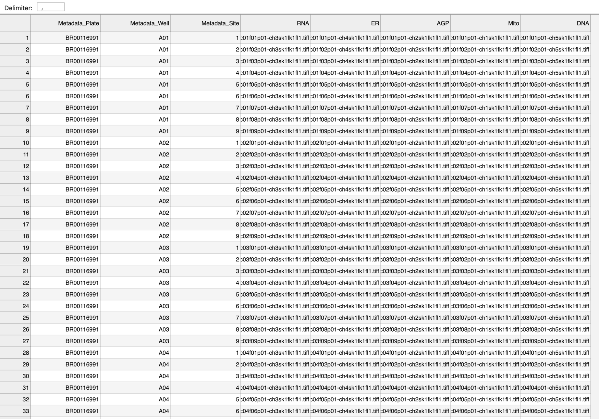

2. Project structure¶
After installing DeepProfiler on your machine, the next step is to create a project directory structure that holds your data with the required inputs and space for generated outputs.
2.1 Initialize your project¶
In the following sections, we assume that you have an Ubuntu environment and a user account named “ubuntu”. Make sure to replace the example path (/home/ubuntu) with the directories that you are using in practice. Go to your base path and create an empty directory for your project (called project):
cd /home/ubuntu
mkdir project
Go back to the DeepProfiler to initialize the contents of your new project directory:
cd DeepProfiler
python3 deepprofiler --root=/home/ubuntu/project --config=config.json setup
Note
Note that the root project directory needs to exist before running this command.
Also, the root and the config file flags are always required, and the config file does not need to exist for the setup command to run. The experiment name is optional.
The following is the expected output:
Using TensorFlow backend.
Directory exists: /home/ubuntu/project/
Creating directory: /home/ubuntu/project/inputs/locations/
Creating directory: /home/ubuntu/project/inputs/config/
Creating directory: /home/ubuntu/project/inputs/images/
Creating directory: /home/ubuntu/project/inputs/metadata/
Creating directory: /home/ubuntu/project/inputs/pretrained/
Creating directory: /home/ubuntu/project/outputs/intensities/
Creating directory: /home/ubuntu/project/outputs/compressed/images/
Creating directory: /home/ubuntu/project/outputs/compressed/metadata/
Creating directory: /home/ubuntu/project/outputs/results/
Creating directory: /home/ubuntu/project/outputs/results/checkpoint/
Creating directory: /home/ubuntu/project/outputs/results/logs/
Creating directory: /home/ubuntu/project/outputs/results/summaries/
Creating directory: /home/ubuntu/project/outputs/results/features/
Resulting in a directory structure like this:
{kind=link}
Fig. 2 Illustration of the project directory structure expected by DeepProfiler.¶
Note
You can create this directory structure manually if you want, but make sure you follow these conventions because DeepProfiler expects these directories to exist and does not explicitly validate if that is the case.
2.2 Add project data¶
The directories created in the previous step are empty, so your next task is to put your project data in the right place. A small example dataset can be obtained from our web servers, so you can test and debug DeepProfiler issues easily. Follow these steps to download the example data:
cd /home/ubuntu
wget https://imaging-platform.s3.amazonaws.com/projects/deepprofiler-examples/example-data.tar.gz
tar -xzf example-data.tar.gz
The example dataset contains a few images from the BBBC021 collection, together with the necessary files to configure the DeepProfiler project. Copy the essential data to the corresponding input directories, including the provided configuration file.
cp -R example-data/BBBC021-small/images/* project/inputs/images/
cp example-data/BBBC021-small/metadata/* project/inputs/metadata/
cp -R example-data/BBBC021-small/locations/* project/inputs/locations/
cp example-data/config.json project/inputs/config/
More information about some of these files can be found below.
2.3 The index.csv file¶
The index.csv file (located in _project/inputs/metadata/index.csv) _is critical for running DeepProfile. It follows a comma-separated-values format with a header, contains information about the experiment, and lists all images in your project. DeepProfiler uses this file to guide image sampling for running learning algorithms, and to find the images that we want to process. This file is expected to contain metadata to identify the context of images in the physical experiment that produced them, for instance, identifiers of plates, wells and fields of view (Figure 3). DeepProfiler assumes that each row in the file represents one (multi-channel) field of view. The following list indicates the columns that the index.csv file is expected to have:
Metadata_Plate: Name or identifier of the plate (i.e., highest level of experimental organization), e.g. Week1_22124. The field header cannot be renamed.Metadata_Well: Position in the plate, e.g. B08 (i.e., middle level of organization within plates). The field header cannot be renamed.Metadata_Site: A microscope acquires images in different sites within each well (i.e., lowest level organization within wells). For instance, sites may cover a 4x4 grid or a 9x9 grid, depending on resolution and other factors. The site identifier for each image goes here, e.g. s3. The field header cannot be renamed.Plate_Map_Name: Name or identifier of the plate layout used, e.g. Week1. The field header cannot be renamed.Channel_Name: Relative path to the image file of each channel. An experiment may have multiple imaging channels (i.e., colors) and DeepProfiler assumes that each channel is stored in a separate image file (all channels stored in the same file is not currently supported). Therefore, to put together all the channels of a single image, the index.csv file will need to have multiple channel_name columns. These columns can be renamed as necessary, and should point to the corresponding image files using a path relative to the root directory. For example, an assay with DNA, Actin, and Tubulin stains will have three channel columns named accordingly, with entries in each column pointing to the corresponding image file. The field may have different names.Treatment: We assume that cells in a well have been treated in a biologically meaningful way or represent different experimental conditions. This column keeps track of that information, which may have other names (in the provided example data, it is called “Compound_Concentration”). It is useful as an identifier of the type of biological experiment, treatment, perturbation or condition of cells observed in the images. This column must be a biologically meaningful label that could be used by DeepProfiler for training purposes. May have different names.Replicate: Number or identifier indicating which repetition of the treatment an image corresponds to.
These are the minimum columns required in the index file. You can append more columns with information specific to your experiment as needed, to keep track of other metadata in your project. Notice that the order of columns is not important, as long as these are available. The meaning of the columns can be interpreted differently according to your problem, for instance, instead of plates, you may be interested in subjects or patients. However, the three levels of organization (plate, well, site) are expected, even if you don’t explicitly use it (e.g. set wells to a constant string if it does not apply to your data). The name of certain columns can be changed as well and later associated with the expected information in the configuration file (Section 3).

Fig. 3 Schematic of plates, wells and sites, which are three metadata fields required by DeepProfiler in the index.csv file.¶
Example of index.csv file:
2.4 Masking cells¶
The pixels in an image that belong to cells can be identified using segmentation algorithms, such as those available in CellProfiler. The segmentation boundaries can be stored as binary images with the outlines of cells in white on a black background. These outlines can be used in DeepProfiler to mask cells and isolate the content of single cells for training neural networks and computing features. This may be useful for projects where the structure of single cells determines the phenotype of interest. In our experience, masking cells can sometimes reduce the performance of learning algorithms in identifying phenotypic information. If cell context is necessary for the study of phenotypic variations in your dataset, we recommend you skip cell masking.
To mask cells, you first need to segment them using an external tool like CellProfiler or Ilastik and save the binary image of their outlines. Save these images in the input/outlines directory. Next, you need to create a csv file with the list of the outline images with three additional columns: plate, well and site. Save this file in the input/metadata directory. The final step is to update the configuration file (Section 3) to let DeepProfiler know that you want to use these outlines for masking the cells. Specifically, the mask_objects setting under locations must be set to true in the configuration file to use masks (more details below).